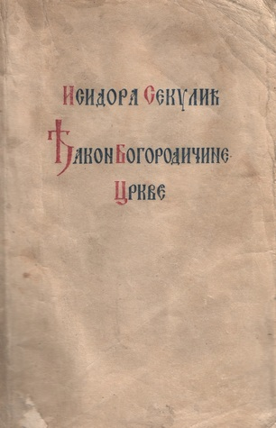

„Đakon Bogorodičine crkve“ je roman srpske književnice Isidore Sekulić, objavljen u zagrebačkoj izdavačkoj kući Knjižara Z. i V. Vasića 1919. godine.
Roman je ispripovedan u trećem licu i u središtu zapleta leži mistička ljubav koja se rađa između pijanistkinje Ane Nedić i monaha Irineja dok priređuju liturgijsko-muzičke koncerte u Bogorodičinoj crkvi. Anin i Irinejev svetonazor se predočava esejističkim pasažima o smislu umetnosti, stvaranju, odnosu etike i estetike, svetog i profanog.
Iako je ovo jedini roman Isidore Sekulić, on je dugo bio ignorisan. Uz saglasnost autorke bio je isključen iz korpusa prvih izdanja njenih odabranih, a potom i iz sabranih dela. Knjiga je ponovo štampana tek 1997. da bi usledilo još nekoliko novih izdanja.
Po motivima ovog romana i pripovetke Ambicije, dim Isidore Sekulić, nastala je drama „Đakon” Ane Đorđević, koja je napisala tekst i režirala predstavu za Srpsko narodno pozorište. Drama je premijerno izvedena 13. aprila 2013. na sceni „Pera Dobrinović“.
Isidora Sekulić (Mošorin, 16. februar 1877 — Beograd, 5. april 1958) bila je srpska književnica i akademik. Bila je prva članica Srpske akademije nauka i umetnosti.
Rođena je 16. februara 1877. godine u podnožju Titelskog brega, u bačkom selu Mošorinu kod Titela. Detinjstvo je provela u Zemunu, Rumi i Novom Sadu. Školovala se u Novom Sadu (Viša devojačka škola), Somboru (Srpska preparandija) i Budimpešti (Pedagogijum). Radila je kao nastavnica u Pančevu u Srpskoj višoj devojačkoj školi od 1897. do 1909. godine.>/p>
Položila je 1898. godine ispit za građanske škole iz francuskog jezika i književnosti. Posle toga radila je u Šapcu (1909-1912) i Beogradu. Doktorirala je 1922. godine i bila je prvi predsednik Udruženja pisaca Srbije.
Govorila je više jezika, i poznavalac više kultura i područja umetničkog izražavanja, Isidora Sekulić je kao pisac, prevodilac i tumač književnih dela ponirala u samu suštinu srpskog narodnog govora i njegovog umetničkog izraza, smatrajući govor i jezik kulturnom smotrom naroda.
Značajnija dela:
Glavna junakinja je mlada pijanistkinja Ana Nedić. Ana je obuzeta muzikom i u svojoj strasti teži čistoj umetnosti, živeći povučeno i gotovo asketski.
Njena glavna okupacija je priređivanje pevačkih i horskih deonica za nedeljne liturgije u Bogorodičinoj crkvi. U službu crkve dolazi mladi monah Irinej, koji je postavljen za novog đakona.
Između Ane i Irineja rađa se čista mistička ljubav. Ipak, vremenom između njih počinje da se rađa i telesni aspekt ljubavi, te dolazi do neočekivanog poljupca. Ana, otkivajući telesnost, odlučuje da se uda za doktora Paškovića jer shvata da je spiritualni aspekt ljubavi ne može u potpunosti ispuniti. Nakon što je tu odluku saopštila Irineju, između njih opet dolazi do poljupca.
Priredila Tamara Petrović